Catalogue d'expériences immersives
Introduction à la réalité virtuelle¶
Introduction to Virtual Reality¶
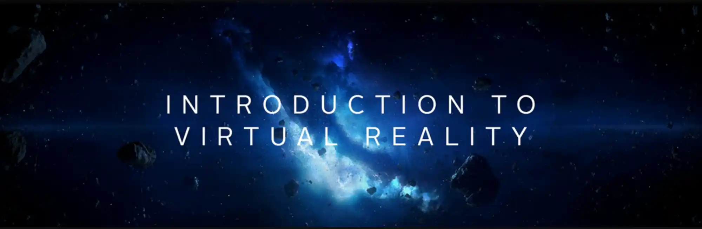
Catégorie : Introduction à la réalité virtuelle
Recommandé pour les premiers pas dans la réalité virtuelle.
Création : Felix & Paul Studios Date : 2019 Durée : 3 min.
Découvrez un aperçu des différentes expériences réalisées par le studio montréalais Felix & Paul, du Cirque du Soleil au monde des dinosaures.
Jeu¶
Claro¶
Catégorie : Jeu
 Coup de cœur de l’équipe
Coup de cœur de l’équipe
Création : Superbright Date : 2018 Durée : N/A
Ce jeu de casse-tête minimaliste à l’ambiance zen vous demande de déplacer le soleil et des miroirs pour diriger la lumière afin de faire pousser un arbre.
Floor plan¶
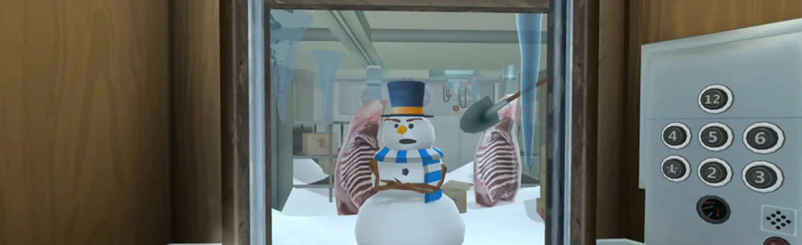
Catégorie : Jeu
Cette application nécessite peu d’interaction et peu de mouvement du corps en général.
Création : Turbo Button Date : 2016 Durée : N/A
Floor Plan est un jeu de casse-tête de type « point-and-click » se déroulant dans un ascenseur. Vous devrez trouver différents objets vous permettant d’interagir avec votre environnement pour accéder aux autres paliers.
Bait¶
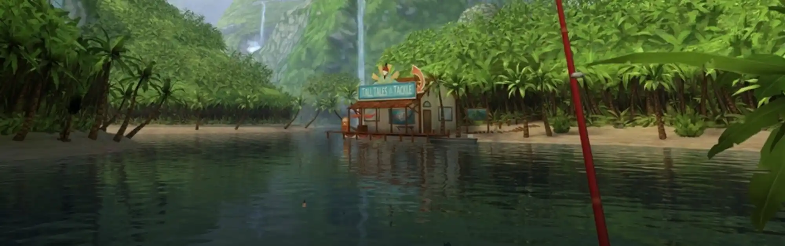
Catégorie : Jeu
Cette application nécessite peu d’interaction et peu de mouvement du corps en général.
Création : Resolution Games Date : 2016 Durée : N/A
Dans ce jeu de simulation de pêche, vous aurez l’occasion de vous familiariser avec l’utilisation de la manette. Le décor accueillant et la musique calme contribuent à l’ambiance relaxante.
Land's End¶
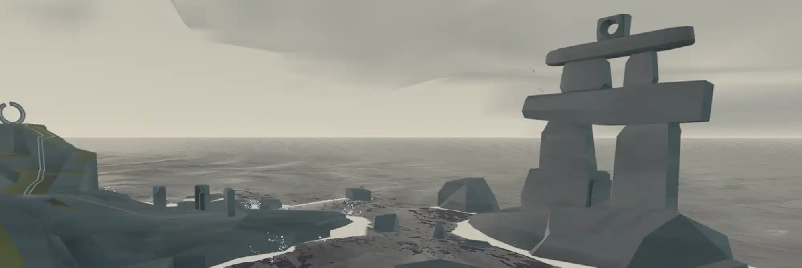
Catégorie : Jeu
Cette application nécessite peu d’interaction et peu de mouvement du corps en général.
Création : Ustwo Games Date : 2015 Durée : N/A
Land’s End est un jeu d’énigme à résoudre pour avancer dans un archipel et découvrir les mystères qu’il renferme.
Breaking boundaries in science¶
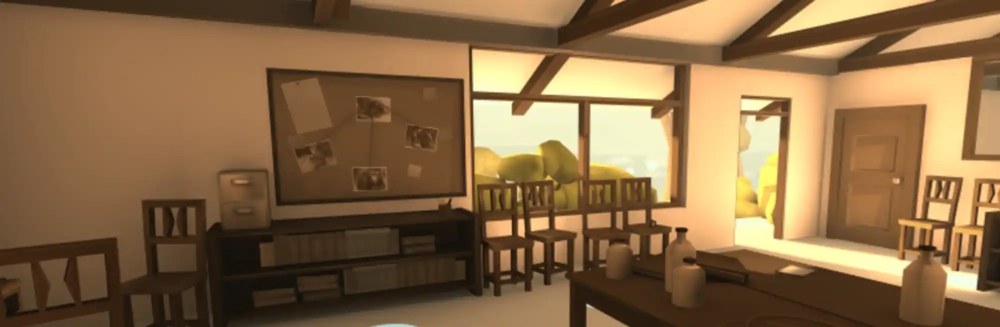
Catégorie : Jeu
Le texte et les dialogues sont en anglais.
Création : Filament Games Date : 2018 Durée : N/A
Breaking Boundaries in science présente trois scènes quotidiennes dans la vie de trois femmes scientifiques qui ont marqué l’histoire : Marie Curie, Jane Goodall, et Grace Hopper. Apprenez-en plus sur leur vie tumultueuse en recherchant des indices dissimulés un peu partout dans l’espace.
Documentaire¶
Cirque du Soleil¶
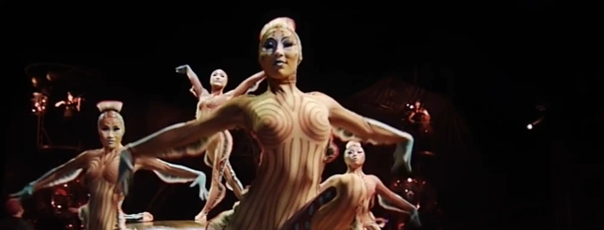
Catégorie : Documentaire
Cette expérience ne nécessite aucune interaction et se déroule en 360 degrés. Un fauteuil pivotant est recommandé pour le visionnement.
Coup de cœur de l’équipe
Création : Felix & Paul Studios Date : 2018 Durée : 60 min.
Il s’agit d’une sélection de 5 films en réalité virtuelle d’environ 10 à 15 minutes chacun. Ils sont inspirés d’extraits de spectacles du Cirque du Soleil : Alegria, KÀ, Kurios, Luzia et O. Parfois étranges, souvent spectaculaires, mais toujours époustouflants, ces court-métrages sont une belle manière de découvrir quelques uns des spectacles du Cirque du Soleil.
Nomads¶
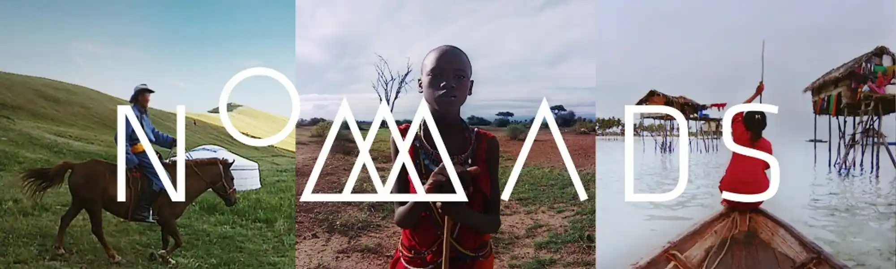
Catégorie : Documentaire
Cette expérience ne nécessite aucune interaction et se déroule en 360 degrés. Un fauteuil pivotant est recommandé pour le visionnement.
Création : Felix & Paul Studios Date : 2016 Durée : 30 min.
La série Nomads vous transporte dans la réalité intime de trois cultures nomades. Découvrez le mode de vie des éleveurs de yaks dans les steppes mongoles, des Maasai au Kenya et des gitans de la mer vivant au large de Bornéo, à travers trois courts métrages présentant des scènes quotidiennes.
Space Explorers¶
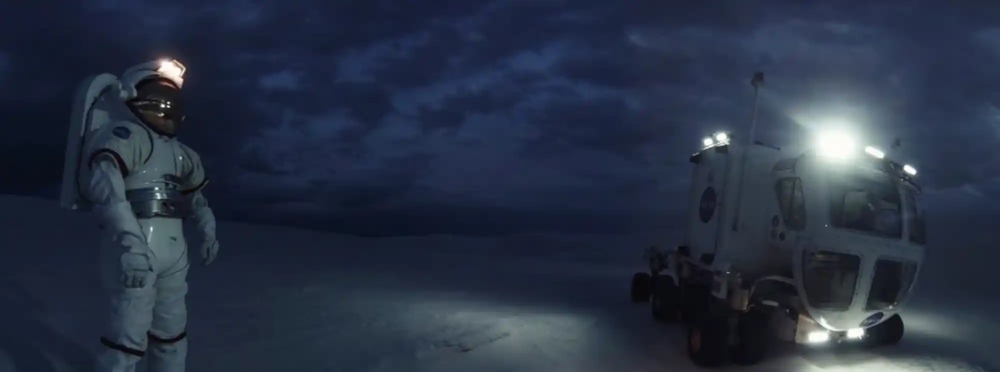
Catégorie : Documentaire
Cette expérience ne nécessite aucune interaction et se déroule en 360 degrés. Un fauteuil pivotant est recommandé pour le visionnement.
Création : Felix & Paul Studios Date : 2018 Durée : 39 min.
Space Explorers est une série de deux épisodes portant sur la formation de jeunes astronautes de différentes nationalités et sur les avancées technologiques liées à l’exploration spatiale. On y parle entres autres des nouvelles collaborations entre la NASA et des entreprises privées.
Notes on blindness¶
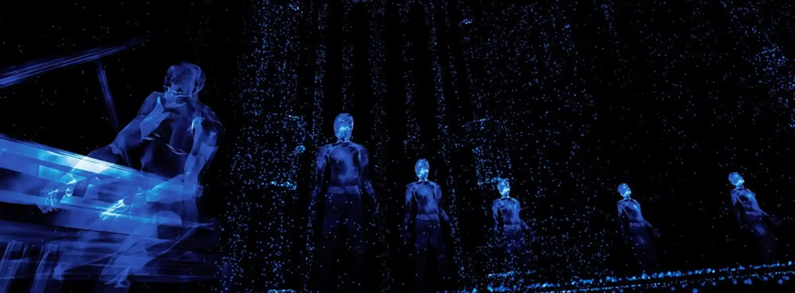
Catégorie : Documentaire
Casque d’écoute recommandé. Le contenu de cette application peut indisposer certaines personnes.
Expérience basée sur le long métrage documentaire Notes on Blindness, réalisé par Peter Middleton et James Spinney.
Création : Arte Experience Date : 2016 Durée : 7 min. Langues : français, anglais, allemand
Notes on blindness est un court voyage immersif 360 degrés dans le monde de la cécité, tiré des expériences intimes et psychologiques de l’écrivain et théologien John Hull, devenu aveugle dans les années 80. Laissez-vous guider par des sons spatialisés, éveillant ainsi vos sens à l’idée d’être privé de la vue.
Anne Frank house¶
Catégorie : Documentaire
Le contenu de cette application peut indisposer certaines personnes.
Création : ForceField Date : 2018 Durée : N/A
Visitez l’«Annexe secrète» où Anne Frank et sa famille ont vécu cachés durant la Deuxième Guerre mondiale. En plus de découvrir les pièces fidèlement recréées de l’annexe, des vidéos, des photos d’archives et des extraits du journal intime d’Anne Frank sont rendus disponibles dans cette application.
Deux modes d’exploration sont offerts : le premier met en perspective cette époque importante de l’histoire humaine, le second permet une visite libre de l’annexe.
Strangers with Patrick Watson¶
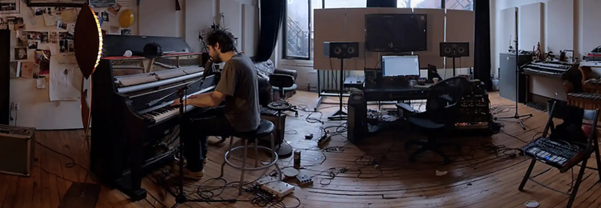
Catégorie : Documentaire
Casque d’écoute recommandé.
Création : Felix & Paul Studios Date : 2018 Durée : 20 min.
Entrez dans le studio montréalais de Patrick Watson, auteur-compositeur canadien. Assistez à sa prestation solo avec la sensation d’être à proximité de l’artiste, son piano et son chien.
Animation¶
The Rose and I¶
Catégorie : Animation
Assez confortable, cette expérience est une belle initiation à la VR.
Création : Alexander Woo Date : 2015 Durée : 5 min.
Librement inspiré du Petit Prince d'Antoine de Saint-Exupéry, ce court métrage d’animation permet un peu d’interaction. Les mouvements possibles dans cette application donne l’impression de faire partie du décor.
Jurassic World Blue¶
Catégorie : Animation
Un peu d’action et quelques scènes d’épouvante. L’animation et le mouvement permettent une plus grande immersion.
Création : Felix & Paul Studios Date : 2018 Durée : 10 min.
Il s’agit d’une animation « sur rail » dont l’action se déroule principalement à 180 degrés. Vous y suivez les aventures de Blue, le dinosaure vedette de la nouvelle mouture de la franchise Jurassic Park.
Dear Angelica¶
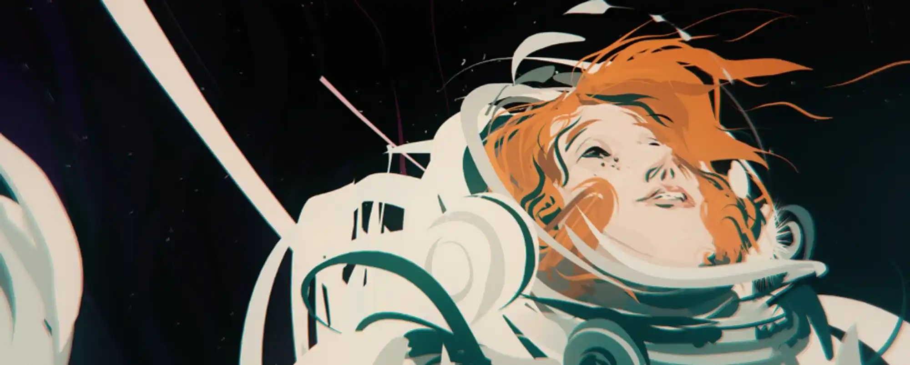
Catégorie : Animation
Plutôt confortable comme expérience, cette application ne nécessite aucune interaction et se déroule à 360 degrés. Un fauteuil pivotant est recommandé pour le visionnement.
Création : Saschka Unseld Date : 2017 Durée : 15 min.
Des studios Oculus Story, Dear Angelica est un voyage onirique qui nous fait découvrir les souvenirs qu’une jeune femme a de sa mère. Entièrement peint à la main, cette animation se déroule dans une série de souvenirs qui se déploient autour de vous. Mettant en vedette Geena Davis et Mae Whitman.
Singularity¶
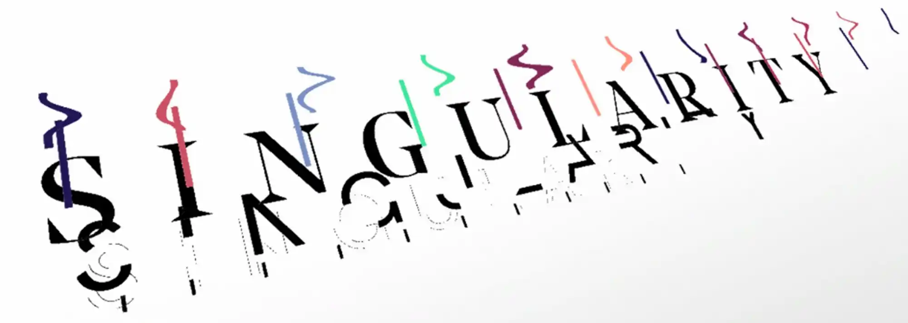
Catégorie : Animation
Création : Relajaelcoco Date : 2017 Durée : 4 min.
Singularity est une animation débridée où formes et couleurs s'entremêlent dans un environnement en 3D et à 360 degrés, redéfinissant ainsi les possibilités de la conception graphique.
Sonar¶
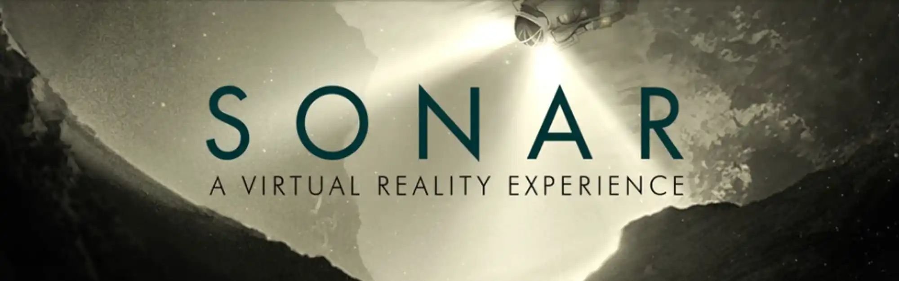
Catégorie : Animation
Création : Philipp Maas, Dominik Stockhausen Date : 2016 Durée : 6 min.
Sonar est le premier court métrage d’animation de science-fiction en réalité virtuelle. Un drone aperçoit un astéroïde et entreprend de l’explorer de plus près. C'est en parcourant un labyrinthe étrange qu’il découvrira la face cachée de l’espace...
Gymnasia¶
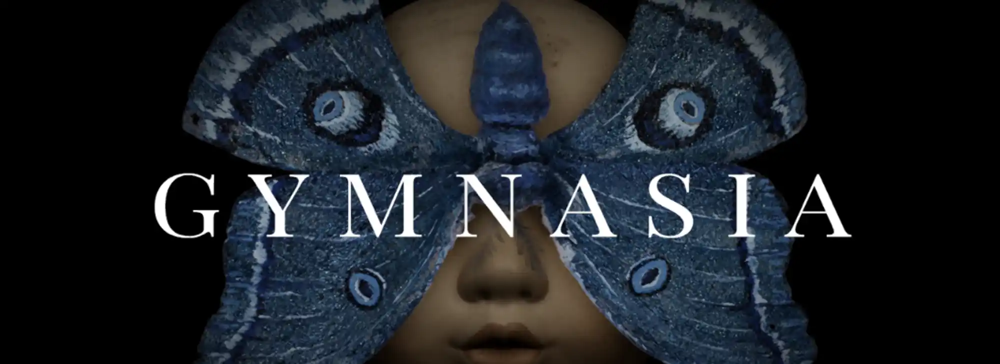
Catégorie : Animation
Création : Chris Lavis et Maciek Szczerbowski (Clyde Henry Productions) Production : Office national du film du Canada et Felix & Paul Studios Date : 2019 Durée : 6 min.
Gymnasia est un court métrage d’animation qui explore la thématique du souvenir. Vous êtes plongé.e dans le gymnase d’une école abandonnée dans une ambiance onirique.
Détente¶
Guided meditation¶
Catégorie : Détente
Très peu d’animation et de mouvement. Application VR confortable et propice à la relaxation.
Création : Cubicle Ninjas Date : 2016 Durée : N/A
Méditation guidée en français dans le décor de votre choix. Choix de séance avec ou sans musique. Plusieurs possibilités de personnalisation des séances.
Liminal¶
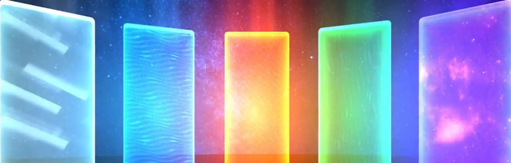
Catégorie : Détente
La création d’un compte gratuit permet d’accéder à plus de contenu.
Création : Liminal VR Date : 2020 Durée : N/A
Liminal est une application destinée à la relaxation qui associe animations 3D et jeux de type « méditation ». De belle facture et accompagnés de musique, les différents jeux offerts nécessitent un peu d’interaction, dont quelques mouvements du corps, alors que les « espaces » de relaxation sont plus statiques. Selon les créateurs de l’application, les jeux et animations s’inspirent de la recherche en neuroscience et en psychologie pour induire ou augmenter des états émotionnels et cognitifs particuliers.